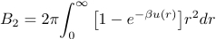

Introduction
The pressure equation of state for a dilute gas can be written as
PV/Nk T = 1 + ρB2(T) + ρ2 B3(T) + ρ3 B4(T) + …,
where P is the pressure, V is the volume, N is the number of particles, T is the temperature, and k is Boltzmann's constant. The density ρ = N/V, and Bn is the nth virial coefficient.
The second virial coefficient B2 is given by the integral
,
where β = 1/kT and u(r) is the interparticle potential. Except for simple forms of u(r), the integral must be done numerically.
The program computes the integral for the Lennard-Jones potential at various temperatures. Simpson's rule is used. The program uses units such that the Lennard-Jones parameters ε and σ are set equal to unity.
Problems
Java Classes
Updated 10 May 2008.